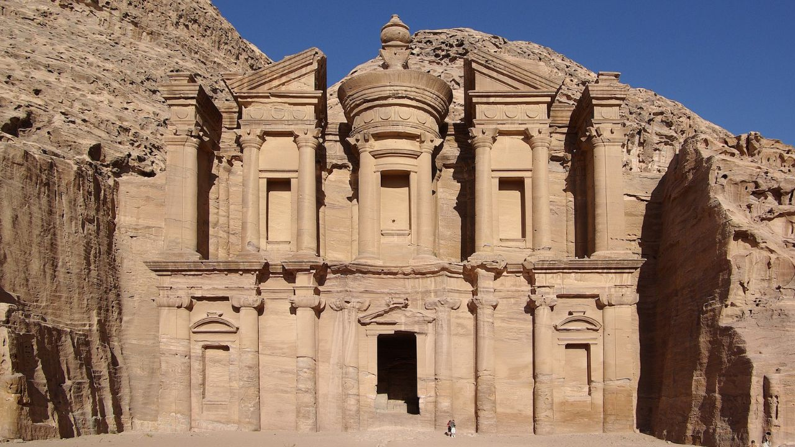

Petra
Petra é uma das cidades mais fascinantes da Antiguidade, escavada diretamente nas rochas de arenito vermelho-rosado no sul da Jordânia. Foi a capital do poderoso reino nabateu por séculos, sendo um importante centro comercial que controlava as rotas de comércio de especiarias, seda e incenso. Sua arquitetura monumental entalhada na pedra viva ainda impressiona visitantes de todo o mundo.
Informações Gerais
| Característica | Detalhes |
|---|---|
| Localização | Ma'an, Jordânia |
| Fundação | Século IV a.C. (povo nabateu) |
| Apelido | "Cidade Rosa" ou "Cidade das Rosas" |
| Acesso principal | Siq — desfiladeiro de 1,2 km de extensão |
| Monument principal | Al-Khazneh (O Tesouro) |
| Patrimônio Mundial UNESCO | Desde 1985 |
| Status | Maravilha do Mundo Moderno (desde 2007) |
Curiosidades
- O nome "Petra" vem do grego e significa "pedra".
- A fachada mais famosa, o Tesouro (Al-Khazneh), mede 40 metros de altura e 28 metros de largura.
- Petra foi "perdida" para o mundo ocidental por séculos — foi redescoberta em 1812 pelo suíço Johann Ludwig Burckhardt.
- O sistema de aquedutos e cisternas nabateu era tão avançado que sustentava uma população de até 30.000 habitantes.
- Aparece no filme "Indiana Jones e a Última Cruzada" (1989).
- Apenas cerca de 15% do sítio foi escavado até hoje.
Imagens
